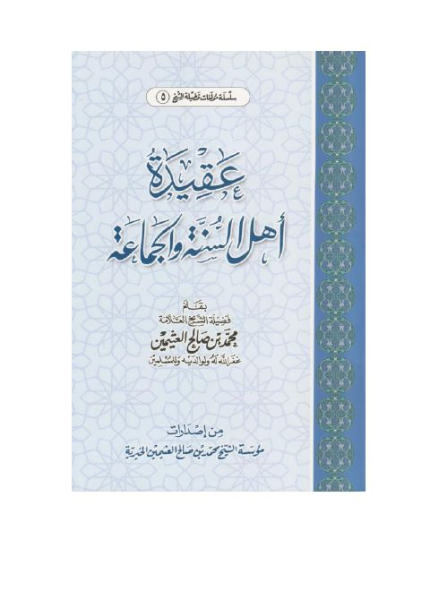

عقيدة أهل السنة والجماعة- مؤسسة العثيمين الخيرية
Authors: محمد بن صالح العثيمين
Publishers: مؤسسة الشيخ محمد بن صالح العثيمين الخيرية
Download Downloads need an internet connection.
- Published
- 1430
- Country
- القصيم، السعودية
- Edition
- 2
- Volumes
- 1
- Pages
- 56
- Type
- كتاب
- Category
- العقيدة والمذاهب والأديان
- Subcategory
- عقيدة أهل السنة
Description
**▫️ العنوان: عقيدة أهل السنة والجماعة- مؤسسة العثيمين الخيرية** ▪️ المؤلف: #محمد_بن_صالح_العثيمين ▫️ الناشر: #مؤسسة_الشيخ_محمد_بن_صالح_العثيمين_الخيرية ▪️ تاريخ النشر: 1430 ▫️ بلد النشر: القصيم، #السعودية ▪️ الطبعة: 2 ▫️ عدد الأجزاء: 1 ▪️ الصفحات: 56 ▫️ نوع الوعاء: #كتاب ▪️ التصنيف الرئيسي: #العقيدة_والمذاهب_والأديان ▫️ التصنيف الفرعي: #عقيدة_أهل_السنة ۪